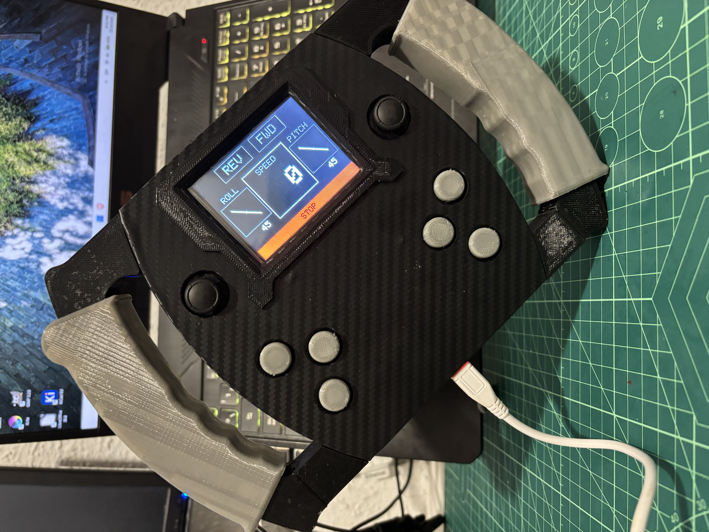

Workflow
- Firstly I had to think on the partition on the roles since I wanted to ensure each components used all its capabilities.
- Then I tested the Wireless and the I2C communication using a level shifter.
- Oh Wait, How do I hold everything?, Thats where the housing comes in
- I integrated the sensor and the main inputs
- Then I limited the inputs treating the signals and saving them in a structure
- After getting the signal I simply displayed them on the TFT
- Lastly, I tested the entire system under real-world conditions.
Objective
There exists no commercially viable solution to drive the custom car, therefore the approach is making one that fits with the experience needed. The ending wheel should have long range u to 100 meters and have low latency down to the 1ms along with different triggers and sensors that read the inputs and show visually on a display, as per the charger and battery this will not be included in the result since a commercially available will be used. There must be an inclusion of the ergonomic design of the wheel, nevertheless this shall not be a strict measure since its not the ghoal of the paper.